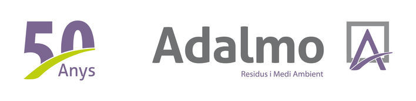

Tu compromiso con el medio ambiente empieza aquí
Contenedores e inteligencia artificial
Los contenedores disponen de sensores de medida de llenado, estos sensores van conectados a una IA que estudia los posibles picos de llenado. Al tener los datos de los picos de llenado y los contenedores ya llenos, podemos optimizar las rutas de recojida, así manteniendo un área limpia donde se encuentren los contenedores y reduciendo las emisiones de transporte.
Materiales reciclados
- Plásticos
- Metales y chatarra
- Papel y carton
- Madera
Muchos más de los materiales que crees se pueden reciclar, por eso trabajamos reciclando plásticos, metales, papel, carton, madera y muchos materiales más. Actualmente estamos trabajando en unas nuevas instalaciones para reciclar material textil, un gran problema que afrontamos actualmente como sociedad.
Nuestros principales fabricadores
- Celsa
- Metaeles
- La farga
- Cortizo
- Finsa
- Cronospan
- Las papeleras
- Hinojosa
- Rdm
- Smurfit
- Big plastic
- Contenur
Visitas guiadas

Realizamos visitas interactivas y guiadas por nuestras instalaciones, de esta forma fomentamos la visualización de los materiales reciclados y los procesos a para conseguirlos, también realizamos excursiones escolares dentro de nuestras instalaciones para concienciar a los más pequeños.
A continuación os dejamos un enlace el cual contiene nuestro calendario con las proximas visitas ¡esperamos veros pronto!